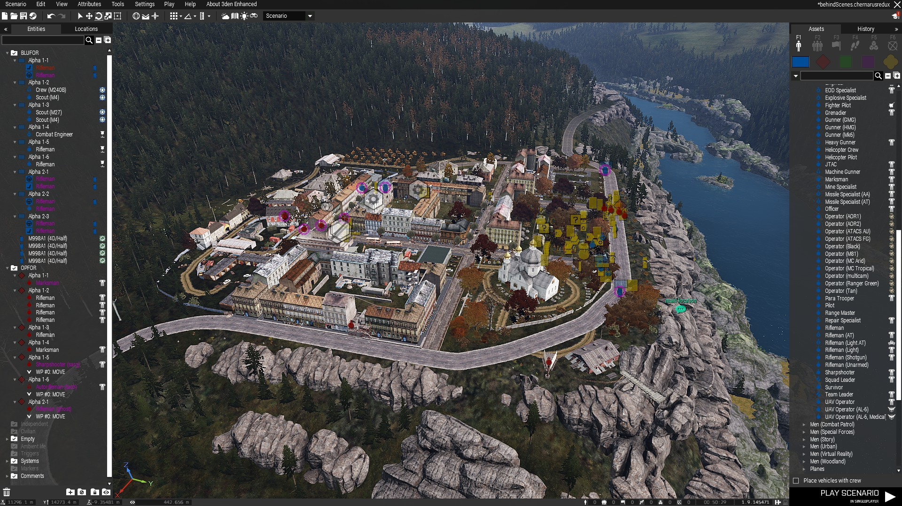
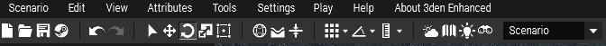
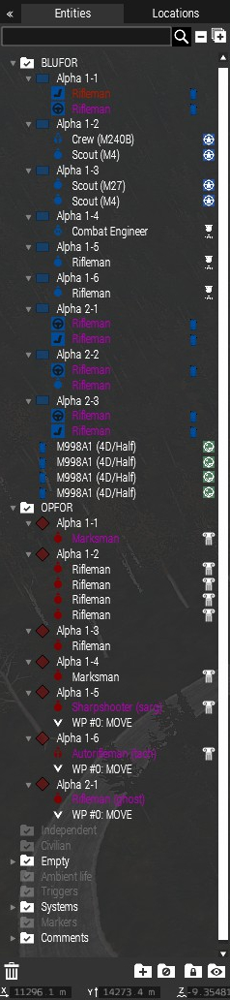
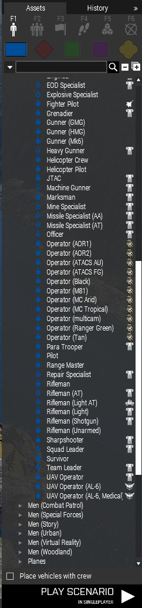
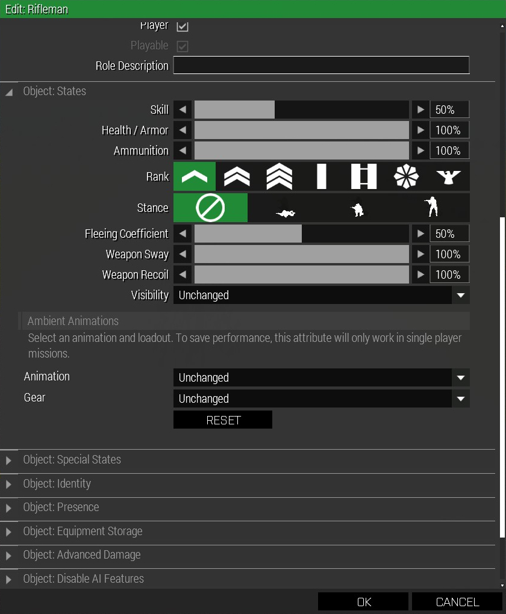

Introducing the UI

Top Bar

In this top bar are all of the tools that can be used set up a new scenario or manipulate the environment of an existing one. From here scenarios can also be saved and published to the Steam Workshop.
Scenario, Edit, and View have the tools to set up a new workspace and to show how it will look to the player. Tools and Settings allow manipulation of the environment itself, from changing the weather to adding in scripting for cutscenes and changing some of the games logic.


Unit Bar
On the left of the editor window is the Unit Bar. This screen tracks all of the units and assets that have been placed into the map. When units are placed near each other and are part of the same faction they automatically group together to become a squad.
This makes it easier(in some cases) to add scripting to an entire squad instead of individual units. This screen also tracks the scripting, movement, and command orders given to each unit making it much easier to modify on the fly and see the intended chain of events.
Right clicking on a unit in this screen will also bring up its attribute page which is very useful for customizing that unit. Finally this screen also tracks the inanimate objects that have been placed into the workspace, its more for accounting purposes than anything else but its still a nice feature.
Asset Bar
On the right of the editor window is the Asset Bar. Most of the set up and scripting will come from here when creating a scenario. The Asset Bar contains all of the spawnable assets and scripting commands available to the creator, including all vanilla and modded(if the creator has them) features.
The lone figure icon is the individual unit spawner, most useful for adding the player character, important NPCs, or creating custom squads. It is also the place to spawn set pieces and props. Next the three figure icon is the squad spawner, it allows entire premade squads to be placed into the scenario with little effort.
It is very useful in campaigns with lots of enemies that the player wont necessarily get a close look at or just need to be cannon fodder. The flag icon is the waypoint tool, it enables the creator to place save points, a respawn location, safe zone, and other logistical parts of a mission.
Finally there is the footprint icon, this is where all of the scripting magic happens. It is the scripting tool and after the unit/prop tool probably the second most important part of the editor. The scripting tool allows the creator to give the player and the AI waypoints, objectives, triggers, move orders, and much more.
Unit Attributes
This is the menu that comes up when right clicking on a unit, vehicle, or certain props. From this menu just about anything can be done to the asset that was selected. If it was a unit or vehicle a creator can change everything about it from its appearance to what parts are damaged and it's behavior. There is even a window specifically for manipulating the AI of a unit through scripts.
For individual soldiers rank, skill level, chance of fleeing, and starting stance can all be set along with a unique ID so the mission scripts can directly influence that specific unit. With vehicles the options are much more limited because there is no AI attached to them and a lack of visual customization. A creator can modify a vehicles damage states, inventory, appearance to a limited extent, how much fuel and ammo it has, and who can use it.
